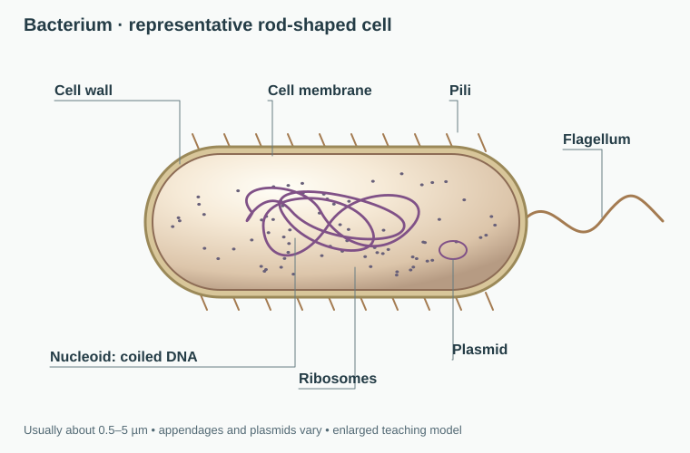
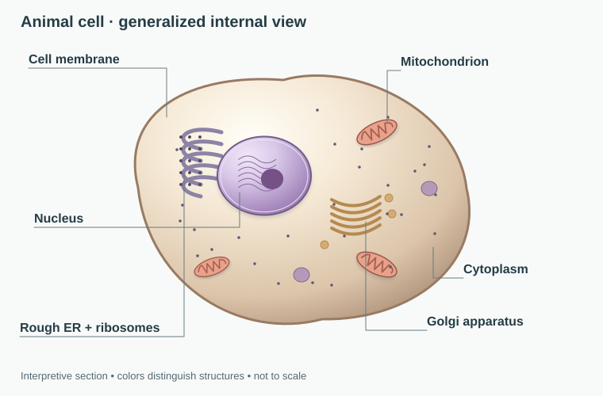
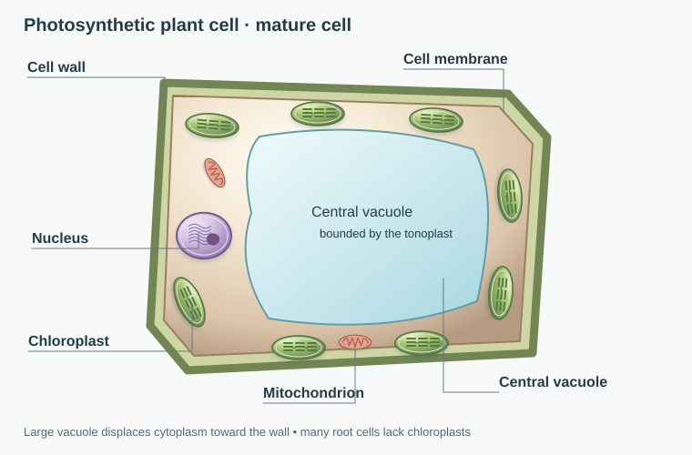
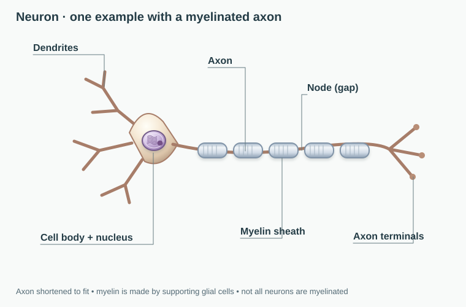
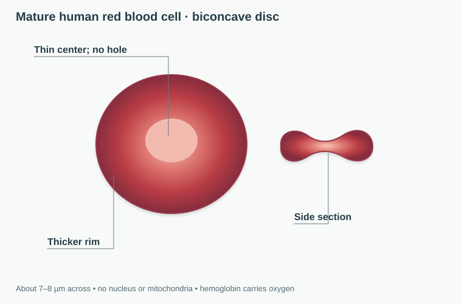
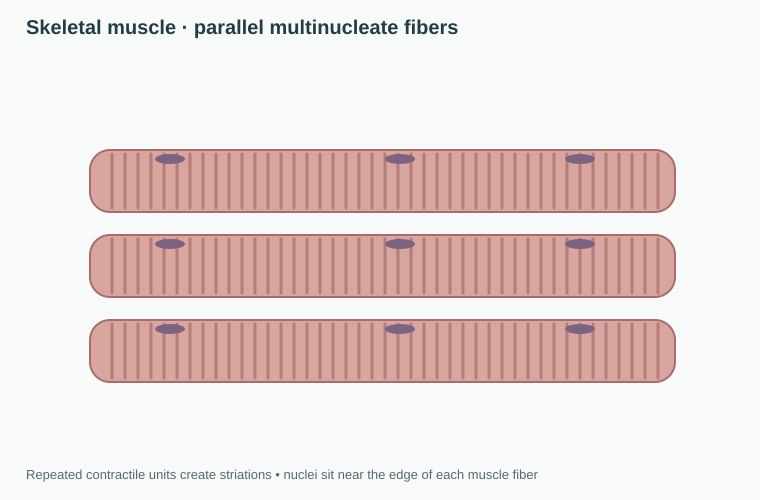
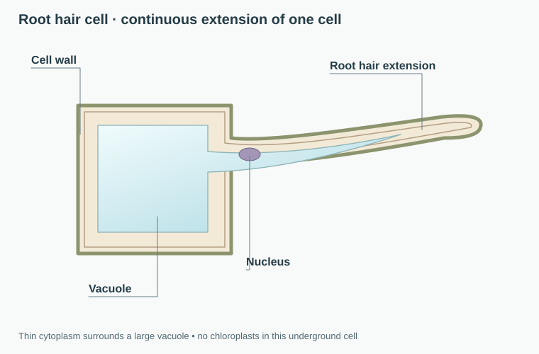
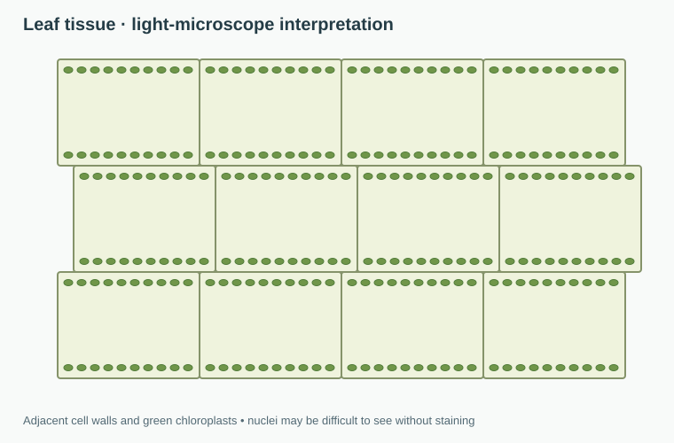
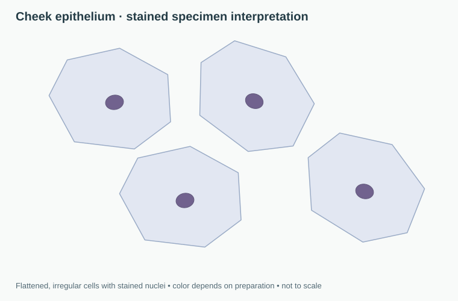
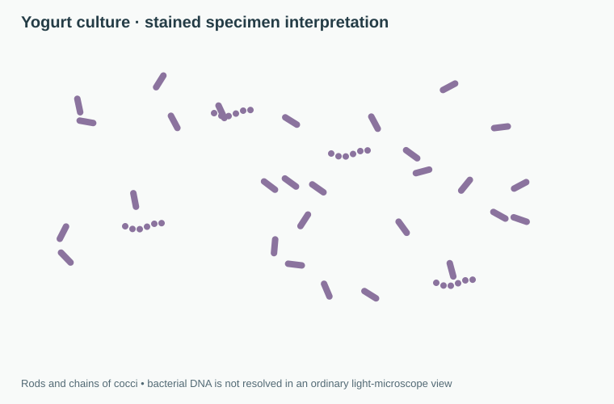

Usually smaller. DNA is organized in a nucleoid region without a surrounding nuclear membrane.
Life Sciences · Lesson 01
Types of Cells
Every living thing is built from cells, but not all cells are built the same way. In this lesson you will compare bacteria with plant and animal cells, learn what organelles do, and practice identifying specialized cells by the jobs they perform.
3
major cell models to compare
6
organelles linked to jobs
4
microscope cases to solve
Start Here
A nucleus is strong evidence of a eukaryotic cell. Its absence alone is not enough: mature mammalian red blood cells lose their nucleus, and a nucleus may be hard to see under a microscope. Compare several clues, including size, cell walls and chloroplasts.
Larger and more complex. DNA is enclosed inside a nucleus and the cell contains membrane-bound organelles.
A eukaryotic cell with a cellulose wall and usually a large central vacuole when mature. Photosynthetic cells have chloroplasts; many root cells do not.
A eukaryotic cell with a flexible membrane, no chloroplasts, and a wide variety of specialized forms.
Cell Comparison Lab
Original anatomical illustrations with interpretive colors, not photographs. Structures are enlarged for clarity; the three models are not drawn to a shared scale. Anatomy reference: OpenStax Biology 2e, Prokaryotic Cells and Eukaryotic Cells.
Use the buttons to switch the focus model. Watch what changes in the diagram and compare the functions that matter most.



Organelle Inspector
Select a structure to see its job inside the cell.
Bacterial Cell
Bacteria are prokaryotes. They do not have a nucleus, and their DNA is found in a nucleoid region. Even though they are small, they can carry out all the functions of life.
Cell Type
Prokaryotic
Key Structures
Cell membrane, cytoplasm, ribosomes, DNA, sometimes a cell wall and flagellum.
Usually Found In
Bacteria. Archaea are also prokaryotes, but their cell envelopes differ.
Main Idea
Simple does not mean weak. These cells are efficient survival machines.
Has a nucleus?
Bacteria: no
Animal: yes
Plant: yes
Cell wall?
Bacteria: often yes
Animal: no
Plant: yes
Chloroplasts?
Bacteria: no
Animal: no
Plant: in photosynthetic cells
Typical shape
Bacteria: rod, sphere, spiral
Animal: flexible and varied
Plant: box-like because of wall
Organelle Guide
Organelles are the working parts inside a cell. Instead of memorizing names alone, connect each one to a job.
Nucleus
The control center. It stores DNA and helps direct what proteins the cell builds.
Mitochondria
The energy processors. They break down food molecules to release usable energy for the cell.
Chloroplasts
Found in plant cells. They capture sunlight and turn it into stored chemical energy through photosynthesis.
Vacuole
A storage space for water, nutrients, and wastes. In plant cells the central vacuole also helps hold shape.
Ribosomes
Protein builders. Ribosomes are found in all cells, including prokaryotic cells.
Cell Wall
A rigid outer support layer found in plants and many bacteria. It helps protect the cell and maintain shape.
Specialized Cells
In multicellular organisms, not every cell performs the same task. Structure changes so function can change too.

Neuron
Long branches let nerve cells send signals quickly across the body.

Red Blood Cell
Its flattened shape increases surface area for carrying oxygen.

Muscle Cell
Protein fibers help the cell contract and generate force.

Root Hair Cell
The long extension increases surface area for absorbing water and minerals from soil.
Teaching Move
Ask students to finish the sentence "This shape helps because..." for each specialized cell. That keeps the focus on structure and function instead of isolated vocabulary.
Specialized Cell Viewer
Compare a generalized animal cell with two specialized forms. These are different cell types, not stages of one cell changing into another.
Generic Animal Cell
This general model shows shared animal-cell structures. During development, different cell lineages produce specialized cells.
Microscope Evidence Lab
Compare illustrated specimens and collect evidence before classifying them. These are microscope interpretations, not micrographs; the root hair is an anatomical diagram. Views are enlarged independently, so displayed size cannot be used to compare cell sizes.



Pond Leaf Scrape
Boxy cells with walls and green chloroplasts point toward a plant cell.
Specimen Tray
Evidence Collected
Verdict: Plant Cell
The cell wall, chloroplast evidence, and boxy shape all support a plant-cell classification.
Classification Challenge
Read each clue and choose the best match. The goal is not random guessing. Look for evidence like nucleus, chloroplasts, cell wall, and job.